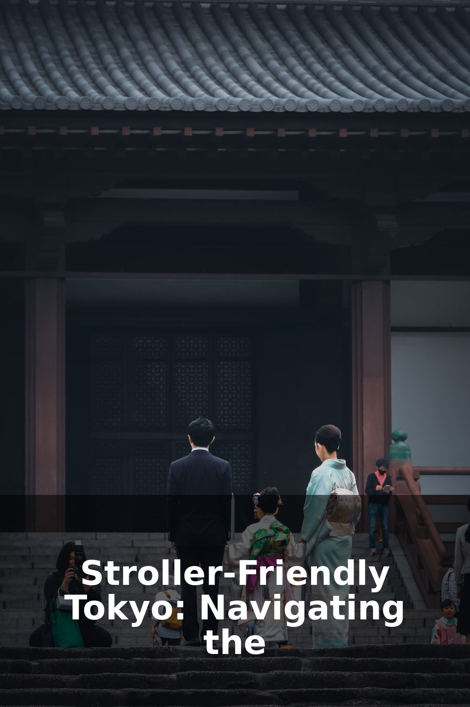

Stroller-Friendly Tokyo: Navigating the City with Kids

Photo by Huu Huynh on Pexels
Exploring Tokyo with a Stroller: Your Family's Guide
Planning a trip to Tokyo with little ones can spark a mix of excitement and a little apprehension, especially when you picture navigating a bustling metropolis with a stroller. Good news, fellow parents! Tokyo is surprisingly stroller-friendly, thanks to its exceptional public infrastructure, thoughtful design, and the ever-polite nature of its residents. As a parent who's navigated these streets, I'm here to share practical, reassuring advice to make your family's Tokyo adventure smooth and enjoyable.
Tokyo's Public Transport: Your Stroller's Best Friend (Mostly!)
- Subways and Trains: This is your primary mode of transport. Many, though not all, stations are equipped with elevators or escalators suitable for strollers. Look for signs indicating "Elevator" (エレベーター) or "Escalator" (エスカレーター). Station staff are also incredibly helpful; don't hesitate to point to your stroller and ask "Elevator wa doko desu ka?" (Where is the elevator?). Avoiding rush hour (roughly 7:30-9:30 AM and 5:00-7:00 PM) is paramount. During these times, trains can be packed, making stroller use difficult or even unsafe. Outside of rush hour, you'll find plenty of space and designated priority seating.
- Buses: For shorter distances or when you want a scenic route above ground, buses can be a fantastic option. Most buses are low-floor and allow strollers to be brought on easily. You might need to fold it if it's crowded, but often there's dedicated space.
- Taxis: Taxis are widely available and can be a lifesaver for tired legs or late-night returns. They usually have ample trunk space for a folded stroller.
Navigating Tokyo's Streets on Foot
Tokyo's sidewalks are generally well-maintained and wide, making pedestrian navigation with a stroller a breeze in many areas. However, keep these points in mind:
- Smooth Paving: Major shopping districts like Ginza and Shinjuku, and large parks, boast exceptionally smooth surfaces.
- Older Neighborhoods: Some charming, older districts might have narrower sidewalks, cobblestone paths, or more frequent staircases, making a baby carrier a useful alternative here.
- Shibuya Crossing: While iconic, navigating the famous Shibuya scramble with a stroller during peak times requires patience. It's doable, but perhaps best experienced with older children or during off-peak hours.
Essential "Baby Rooms" (赤ちゃんの駅 - Akachan no Eki)
Tokyo excels in providing dedicated facilities for parents. These are often called "Baby Rooms" or "Nursery Rooms" and are a lifesaver. You'll find them in:
- Department Stores: Almost every major department store (e.g., Isetan, Mitsukoshi, Takashimaya) has immaculate, spacious baby rooms. These typically include private nursing booths, diaper changing stations, hot water dispensers for formula, and sometimes even small play areas or vending machines for baby essentials.
- Shopping Malls & Large Stores: Similar to department stores, modern malls and large retail outlets (like UNIQLO or Toys"R"Us) offer excellent facilities.
- Train Stations & Airports: Major stations often have compact, but functional, changing facilities.
- Museums & Attractions: Many family-friendly attractions provide baby rooms.
Don't hesitate to ask for "Akachan no heya" (baby room) or "Omutsu-gae-shitsu" (diaper changing room) if you can't spot them.
Stroller-Friendly Attractions & Areas
Many of Tokyo's top sights are perfectly enjoyable with a stroller:
- Parks: Ueno Park, Shinjuku Gyoen National Garden, Yoyogi Park – all offer wide, paved paths perfect for strolling. Ueno Park is home to the Tokyo National Museum and Ueno Zoo, both largely stroller-friendly.
- Odaiba: This futuristic waterfront area is incredibly stroller-friendly with wide promenades, shopping malls, and attractions like the National Museum of Emerging Science and Innovation (Miraikan).
- Museums: The National Museum of Nature and Science (Ueno) is excellent for kids and very accessible. The Ghibli Museum is also navigable, but it's smaller and can get crowded; consider a carrier for parts of it.
- Shopping Districts: Ginza and Shinjuku offer wide sidewalks and numerous department stores with those fantastic baby rooms.
Practical Tips for Stroller Success
- Compact Stroller is Key: A lightweight, easily foldable stroller will be your best friend. It's easier to maneuver in crowds, get on and off public transport, and store.
- Baby Carrier Backup: A baby carrier or sling is invaluable for moments when you encounter stairs, very crowded areas, or when your little one simply wants to be close.
- Trash Etiquette: Japan has very few public trash bins. Be prepared to carry your trash (including diapers) with you until you find a bin, typically in train stations, convenience stores, or department store restrooms.
- Hydration & Snacks: Always carry water and snacks. Vending machines are plentiful, but having your own ensures you have what your child likes.
- Ask for Help: Japanese people are generally very helpful and polite. Don't be shy to ask a station attendant or a passerby for assistance if you're struggling with stairs or finding an elevator. A simple "Sumimasen" (excuse me) and a smile goes a long way.
- Patience: Traveling with children inevitably means slower paces and unexpected detours. Embrace it!
Tokyo truly is a welcoming city for families. With a bit of planning and these insights, you'll find that navigating its vibrant streets with a stroller is not just possible, but genuinely enjoyable. Get ready for an unforgettable family adventure!
This guide may contain affiliate links. If you book or buy through them, we may earn a small commission at no extra cost to you. As an Amazon Associate we earn from qualifying purchases. We only recommend things we believe genuinely help your family's trip.